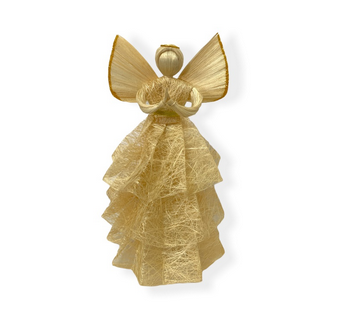

OUR PRODUCTS




We, the SAFRUDI community living God’s words and deeds,strive to establish a web of prosperous,environment-friendly and sustainable self-propelled communities towards total human development by organizing, guiding and strengthening marginalized
communities, empowering small producers,sharing knowledge and skills,raising the level of social consciousness,and creating and marketing new and relevant products according to Fair Trade principles.
Read More